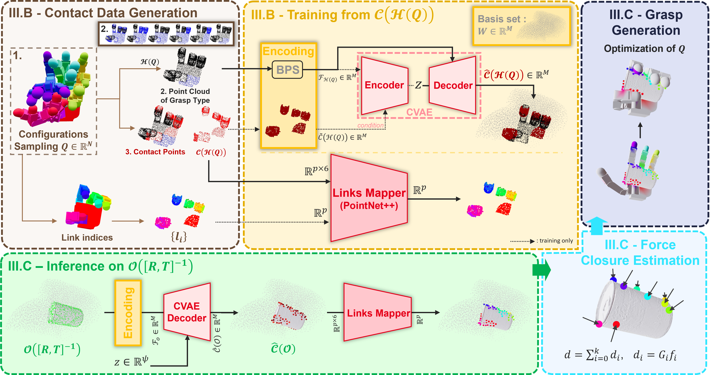

Abstract
Multifingered grasping is a crucial robotic skill, but current deep-learning grasp planners often struggle to generalize to new objects because they are trained on limited, object-specific datasets. We introduce a fundamentally different approach, grounded in the observation that the gripper and the object share identical surface geometry at their mutual contact points. We propose GOAG: Generative and Object-Agnostic Grasp Planner for Dexterous Robotic Manipulation, a novel deep generative model that learns a compact latent representation of a specific gripper's contact surface distribution, enabling the efficient sampling of valid grasp configurations without relying on object-specific training data. We show that by introducing object features only at inference time, our model can effectively retrieve admissible contact areas that are compatible with the gripper’s capabilities. We validate our approach through extensive experiments on established grasp protocols in both simulated and real-world scenarios, demonstrating its effectiveness with different grippers from the literature.
Our method delivers state-of-the-art results on the objects from the MultiDex dataset, achieving an average success rate of $86.93\%$. It offers significantly faster processing when generating numerous grasps, while matching the performance of leading approaches specifically trained on this dataset. Unlike these methods, our approach does not rely on object-specific training data, highlighting the advantages of object-agnostic learning. It effectively addresses the generalization challenges faced by traditional data-driven grasp planners.

Overview of GOAG. Geometrical graspability is learned in an object-agnostic manner by focusing on the gripper's capabilities.
Training: We sample gripper configurations $Q$ to generate $\mathcal{H}(Q)$ and corresponding contact points $(\mathcal{C}(\mathcal{H}(Q)))$. To ensure transferability, we use a Basis Point Set (BPS) encoding tied to the gripper's workspace. A Conditional Variational Autoencoder (CVAE) is trained to reconstruct these contact distributions, while a Links Mapper (PointNet++) learns to associate contact points with specific gripper links.
Inference: A novel object $\mathcal{O}$, positioned at the inverse gripper pose $[R,T]^{-1}$, is BPS-encoded. By sampling a latent variable $z \in \mathbb{R}^\psi$, the CVAE Decoder generatively predicts diverse, plausible contact points $\widehat{\mathcal{C}}(\mathcal{O})$. The Links Mapper then labels which gripper link should reach each point.
Generation: Finally, a Force Closure check ensures the predicted contacts yield a stable grasp, and a Grasp Optimization step outputs the final, refined gripper configuration $Q^*$.
Video Presentation
Qualitative Results: Synthesized Grasps and Real-World Experiments
Synthetic Results. Grasps are shown for the Barrett, Allegro Hand, and Shadow Hand grippers.
Real-World Experiments. Demonstrating GOAG on real-world objects using the Allegro Hand in various scenarios.
BibTeX
@inproceedings{merand2026goag,
title={GOAG: Generative and Object-Agnostic Grasp Planner for Dexterous Robotic Manipulation},
author={Mérand, Julien and Meden, Boris and Grossard, Mathieu and Chen, Liming},
booktitle={2026 IEEE/RSJ International Conference on Intelligent Robots and Systems (IROS)},
year={2026},
url={https://cea-list.github.io/goagweb/}
}